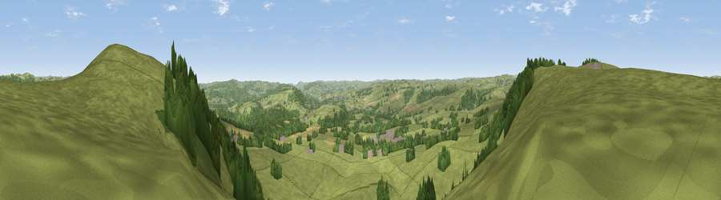

Viewpoint near Rowland
#16199 in England · top 22% of its area beats it · near Rowland · footpathWhere it is
The exact computed spot (SK 20425 73125). Click the marker for map links.
Public access: a public right of way passes within 7 m of this spot. Computed from Natural England's CRoW access layer and OpenStreetMap rights of way — not the legal definitive map. Always verify locally.
The view, rendered

A 360° render of this exact spot computed from the terrain model, tree cover and land cover — summer colours, afternoon light, calibrated against photographs of famous viewpoints. Real trees, hedges and buildings will differ in detail.
The panorama
Grey silhouette: terrain skyline in each direction (720 bearings, Earth curvature and refraction included). Dashed green: skyline with trees (+15 m) and buildings (+8 m) as obstacles. Blue strip: how far the ground is visible on each bearing.
Where the view opens
Wedge length = distance to the farthest visible ground on that bearing (vegetation-aware). Rings at 10, 25 and 50 km.
What fills the view
82% grassland · 15% woodland · 2% cropland ·
Angular shares of the visible panorama (visual magnitude), not map area. Landscape diversity 0.24 (0–1 Shannon).
Key numbers
More beautiful places nearby
The staircase of upgrades: each row has a higher view potential than everything closer. Driving times are estimates from straight-line distance, calibrated against real road routing — check an actual route before setting out.
| Place | Direction | Drive | Score |
|---|---|---|---|
| High Rake | ENE · 1 km | ~2 min | 71.1 |
| Lord's Seat | NW · 14 km | ~25 min | 73.1 |
| Viewpoint near Thornhill | N · 16 km | ~28 min | 74.1 |
| Tissington Hill | SSW · 21 km | ~35 min | 75.5 |
| Wild Bank | NW · 33 km | ~51 min | 76.2 |
| Viewpoint near Carrbrook | NW · 34 km | ~52 min | 77.1 |
| Viewpoint near Mow Cop | WSW · 38 km | ~57 min | 78.9 |
| Viewpoint near Mow Cop | WSW · 38 km | ~57 min | 80.2 |
53.25474, -1.69531 · source: screening · position refined by local search. Computed location — check access rights before visiting.